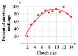

Section 6.8 Projects for Chapter 6
Project 6.3. Optimum Feeding Rate.
Starlings often feed in flocks, and their rate of feeding depends on the size of the flock. If the flock is too small, the birds are nervous and spend a lot of time watching for predators. If the flock is too large, the birds become overcrowded and fight each other, which interferes with feeding. Here are some data gathered at a feeding station. The data show the number of starlings in the flock and the total number of pecks per minute recorded at the station while the flock was feeding. (Source: Chapman & Reiss, 1992)
| Number of starlings |
Pecks per minute |
Pecks per starling per minute |
| \(1\) | \(9\) | |
| \(2\) | \(26\) | |
| \(3\) | \(48\) | |
| \(4\) | \(80\) | |
| \(5\) | \(120\) | |
| \(6\) | \(156\) | |
| \(7\) | \(175\) | |
| \(8\) | \(152\) | |
| \(9\) | \(117\) | |
| \(10\) | \(180\) | |
| \(12\) | \(132\) |
For each flock size, calculate the number of pecks per starling per minute. For purposes of efficient feeding, what flock size appears to be optimum? How many pecks per minute would each starling make in a flock of optimal size?
Plot the number of pecks per starling per minute against flock size. Do the data points appear to lie on (or near) a parabola?
The quadratic regression equation for the data is \(y = -0.45x^2 + 5.8x + 3.9\text{.}\) Graph this parabola on the same axes with the data points.
What are the optimum flock size and the maximum number of pecks per starling per minute predicted by the regression equation?
Project 6.4. Optimum clutch size.
Biologists conducted a four-year study of the nesting habits of the species Parus major in an area of England called Wytham Woods. The bar graph shows the clutch size (the number of eggs) in 433 nests. (Source: Perrins and Moss, 1975)

-
Which clutch size was observed most frequently? Fill in the table, showing the total number of eggs produced in each clutch size.
Clutch size \(2\) \(3\) \(4\) \(5\) \(6\) \(7\) \(8\) \(9\) \(10\) \(11\) \(12\) Number of clutches \(1\) \(0\) \(2\) \(12\) \(23\) \(73\) \(126\) \(116\) \(59\) \(19\) \(3\) Number of eggs -
The average weight of the nestlings declines as the size of the brood increases, and the survival of individual nestlings is linked to their weight. A hypothetical (and simplified) model of this phenomenon is described by the table below. Calculate the number of surviving nestlings for each clutch size. Which clutch size produces the largest average number of survivors?
Clutch size \(1\) \(2\) \(3\) \(4\) \(5\) \(6\) \(7\) \(8\) \(9\) \(10\) Percent survival \(100\) \(90\) \(80\) \(70\) \(60\) \(50\) \(40\) \(30\) \(20\) \(10\) Number of survivors The figure shows the number of survivors for each clutch size in Wytham Woods, along with the curve of best fit. The equation for the curve is
\begin{equation*} y = -0.0105x^2 + 0.2x - 0.035\text{.} \end{equation*}Find the optimal clutch size for maximizing the number of surviving nestlings. How does this optimum clutch size compare with the most frequently observed clutch size in part (a)?

Project 6.5. Line of best fit.
In this project, we minimize a quadratic expression to find the line of best fit. The figure shows a set of three data points and a line of best fit. For this example, the regression line passes through the origin, so its equation is \(y = mx\) for some positive value of \(m\text{.}\) How shall we choose m to give the best fit for the data? We want the data points to lie as close to the line as possible. One way to achieve this is to minimize the sum of the squares of the vertical distances shown in the figure.

-
The data points are \((1, 2)\text{,}\) \((2, 6)\text{,}\) and \((3, 7)\text{.}\) Verify that the sum \(S\) we want to minimize is
\begin{align*} S \amp = (2 - m)^2 + (6 - 2m)^2 + (7 - 3m)^2\\ \amp = 14m^2 - 70m + 89 \end{align*} -
Graph the formula for \(S\) in the window
\begin{align*} {\text{Xmin}} \amp = 0 \amp\amp {\text{Xmax}} = 9.4\\ {\text{Ymin}} \amp = 0 \amp\amp {\text{Ymax}} = 100 \end{align*} Find the vertex of the graph of \(S\text{.}\)
Use the value of \(m\) to write the equation of the regression line \(y = mx\text{.}\)
Graph the three data points and your regression line on the same axes.
Project 6.6. Quadratic growth rate.
The figure shows the typical weight of two species of birds each day after hatching. (Source: Perrins, 1979)

Describe the rate of growth for each species over the first 15 days of life. How are the growth rates for the two species similar, and how are they different?
-
Complete the tables showing the weight and the daily rate of growth for each species.
Parus major Day \(1\) \(2\) \(3\) \(4\) \(5\) \(6\) \(7\) \(8\) \(9\) \(10\) \(11\) \(12\) \(13\) \(14\) \(15\) Weight \(\) \(\) \(\) \(\) \(\) \(\) \(\) \(\) \(\) \(\) \(\) \(\) \(\) \(\) \(\) Growth rate \(\) \(\) \(\) \(\) \(\) \(\) \(\) \(\) \(\) \(\) \(\) \(\) \(\) \(\) \(\) Parus caeruleus Day \(1\) \(2\) \(3\) \(4\) \(5\) \(6\) \(7\) \(8\) \(9\) \(10\) \(11\) \(12\) \(13\) \(14\) \(15\) Weight \(\) \(\) \(\) \(\) \(\) \(\) \(\) \(\) \(\) \(\) \(\) \(\) \(\) \(\) \(\) Growth rate \(\) \(\) \(\) \(\) \(\) \(\) \(\) \(\) \(\) \(\) \(\) \(\) \(\) \(\) \(\) Plot the rate of growth against weight in grams for each species. What type of curve does the growth rate graph appear to be?
For each species, at what weight did the maximum growth rate occur? Locate the corresponding point on each original curve in Figure 6.129.
Project 6.7. Parus major growth rate.
Find a quadratic regression equation for the growth rate of Parus major in terms of its weight using the data from Project 6.6.
Make a scatterplot of the data and draw the regression curve on the same axes.
Find the vertex of the graph of the regression equation. How does this estimate for the maximum growth rate compare with your estimate in Project 6.6?
Project 6.8. Parus caeruleus growth rate.
Find a quadratic regression equation for the growth rate of Parus caeruleus in terms of its weight using the data from Project 6.6.
Make a scatterplot of the data and draw the regression curve on the same axes.
Find the vertex of the graph of the regression equation. How does this estimate for the maximum growth rate compare with your estimate in Project 6.6?